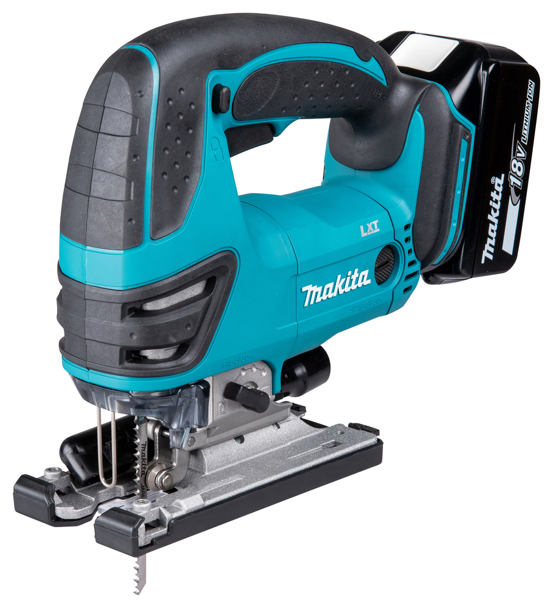
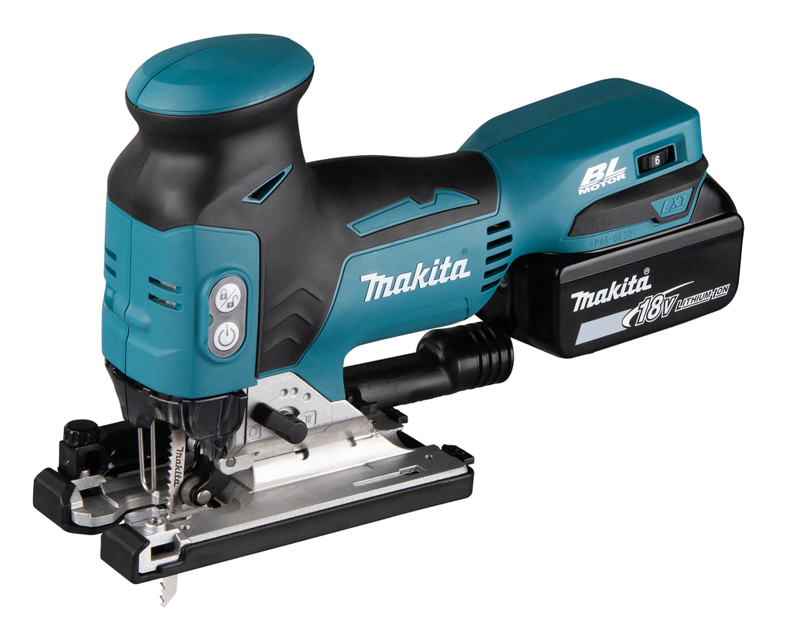
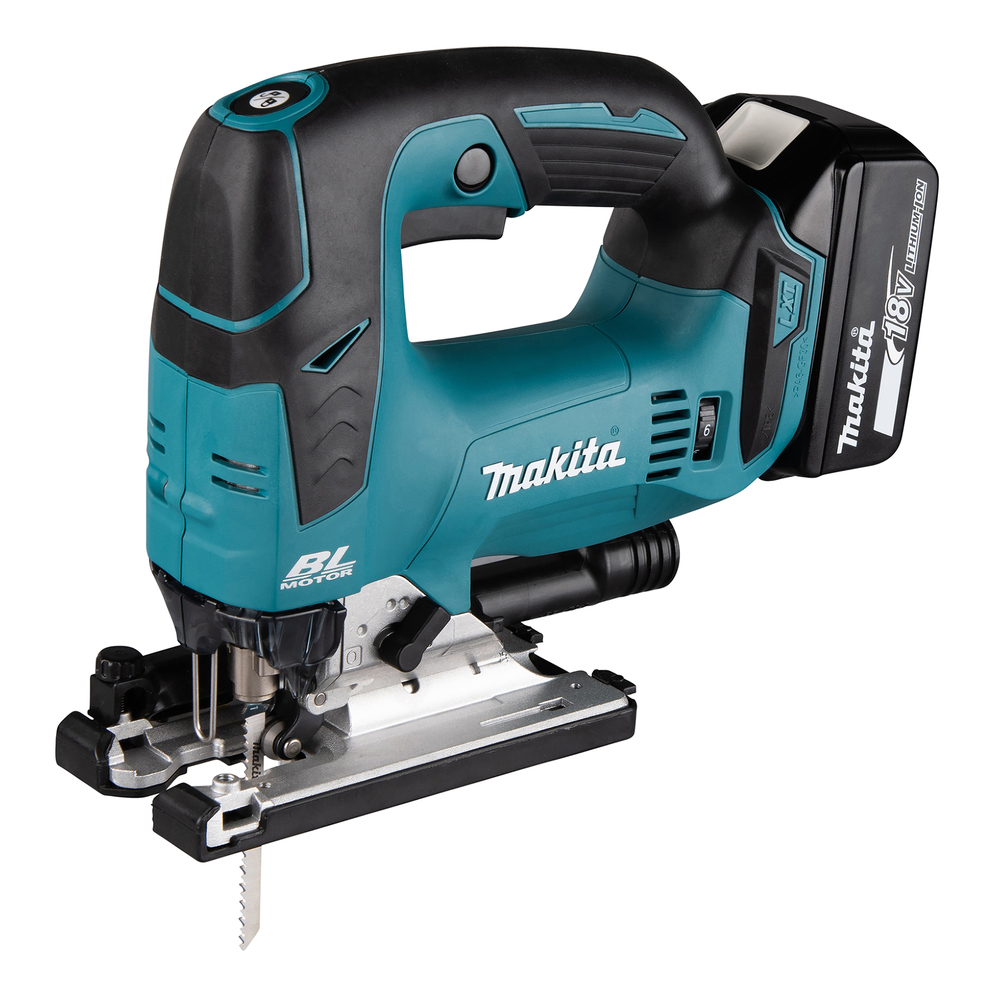
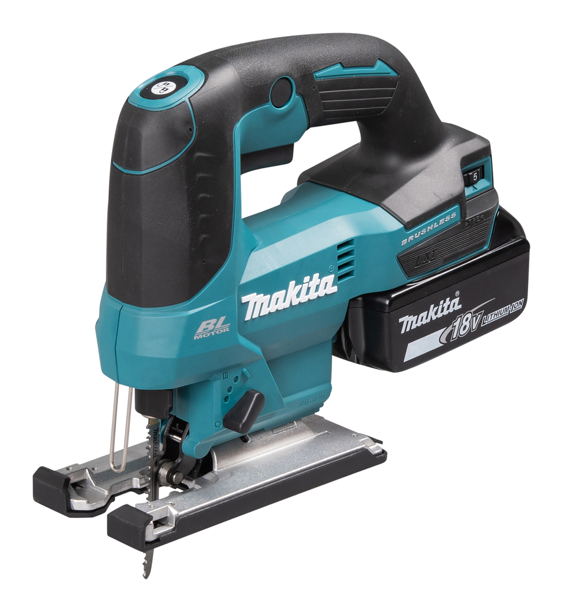
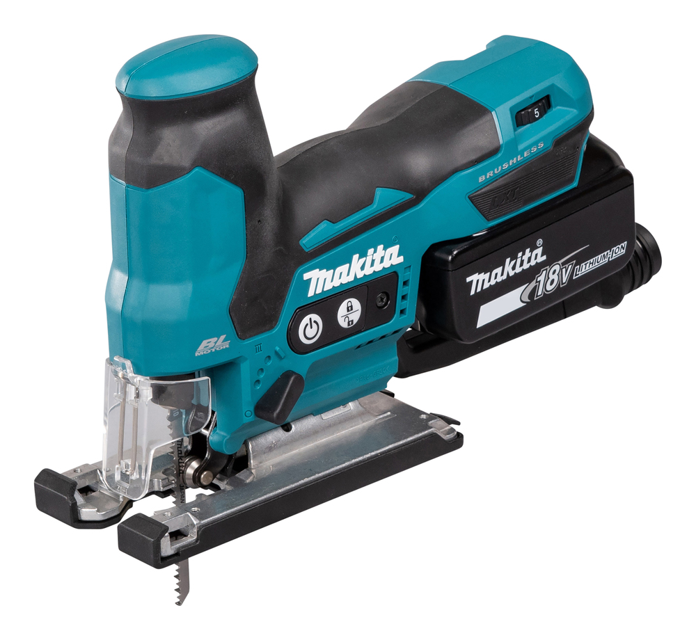

Jig Saws Comparison
|  |  |  |  |  |  |
|
| Model | DJV180 | DJV181 | DJV182 | DJV184 | DJV185 | DJV186 |
| Voltage (V) | 18 | 18 | 18 | 18 | 18 | 18 |
| Description | 26 mm stroke, 0-2600 SPM, tool-less blade clamp | Brushless, 26 mm stroke, 800-3500 SPM | Brushless barrel, 26 mm stroke, 800-3500 SPM | Compact brushless, 23 mm stroke, 0-3000 SPM | Barrel brushless, 23 mm stroke, 800-3000 SPM | Compact 18 mm stroke, 0-2900 SPM, lightweight |
| Motor | Brushed | Brushless | Brushless | Brushless | Brushless | Brushed |
| Strokes Per Minute (SPM) | 0-2600 | 800-3500 | 800-3500 | 0-3000 | 800-3000 | 0-2900 |
| Stroke Length (mm) | 26 | 26 | 26 | 23 | 23 | 18 |
| Max Cutting Wood (mm) | 135 | 135 | 135 | 135 | 135 | 65 |
| Max Cutting Steel (mm) | 10 | 10 | 10 | 10 | 10 | 6 |
| Max Cutting Aluminium (mm) | 20 | 20 | 20 | 20 | 20 | 10 |
| Length (mm) | 257 | 298 | 266 | 259 | 259 | 257 |
| Weight (kg) | 2.7-3.0 | 2.3-2.6 | 2.4-2.7 | 2.1-2.4 | 2.0-2.3 | 1.9-2.2 |
| Orbital Action | Yes | Yes | Yes | Yes | Yes | Yes |
Understanding Jig Saw Specifications
Strokes Per Minute (SPM)
Higher SPM cuts faster in sheet goods; slow down for thicker stock or metals to keep blades cool and cuts clean.
Stroke Length (mm)
Longer strokes remove more material per pass for speed; shorter strokes give finer control and smoother finishes.
Material Capacities
The wood, steel, and aluminium capacities are the recommended maximum thicknesses. Staying within them protects blades, motors, and cut quality.
Weight and Form Factor
Lighter barrel-grip bodies suit overhead or precise work; heavier top-handle saws offer stability on long, straight cuts.